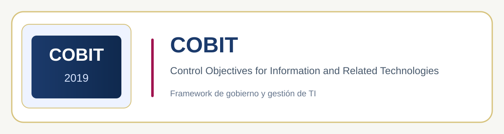

Introducción
Este portafolio se creó en base a necesidades académicas propuestas por actividades Transeducacionales; a lo largo del mismo se evidencian las diferentes actividades que realizamos a lo largo de este semestre. Además de un breve resumen sobre el COBIT y demás.
COBIT
Control Objectives for Information and Related Technologies

Es un marco de referencia internacional para el gobierno y la gestión de las tecnologías de la información (TI) en las organizaciones.
En términos simples, COBIT ayuda a las empresas a asegurarse de que la tecnología que usan esté realmente alineada con sus objetivos de negocio, que se use de forma eficiente, que los riesgos estén controlados y que se cumplan las normativas aplicables.
¿Para qué sirve?
- Conectar las decisiones de TI con las metas estratégicas de la empresa.
- Establecer roles y responsabilidades claras sobre quién toma decisiones.
- Gestionar riesgos relacionados con la tecnología y el cumplimiento.
- Medir el desempeño de TI mediante indicadores concretos.
COBIT 2019, la versión más reciente, es desarrollada por ISACA y se distingue por ser más flexible que versiones anteriores: permite que cada organización adapte el marco según su tamaño, industria y necesidades específicas.
Multimedia
Pitch Inglés
Video externo de prueba para verificar la visualización del contenido multimedia.